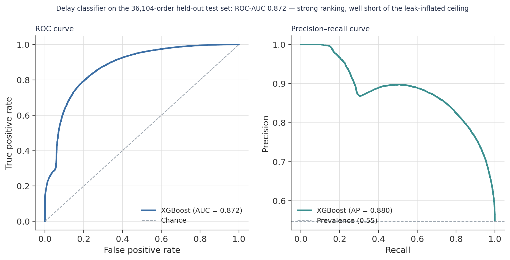
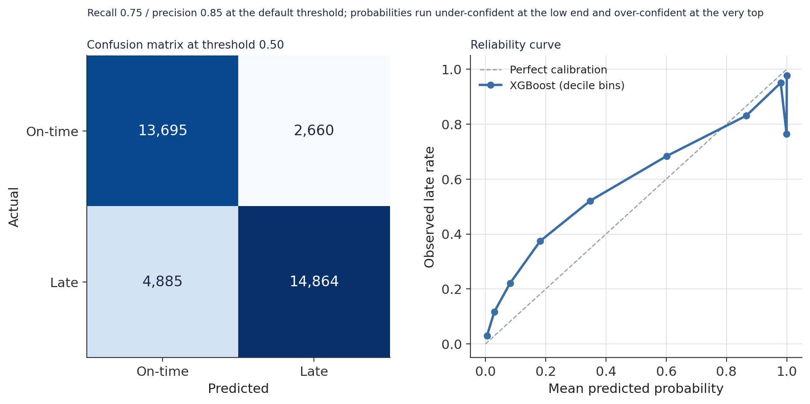
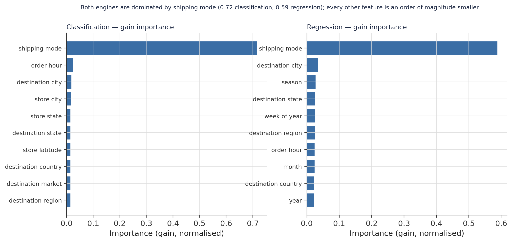
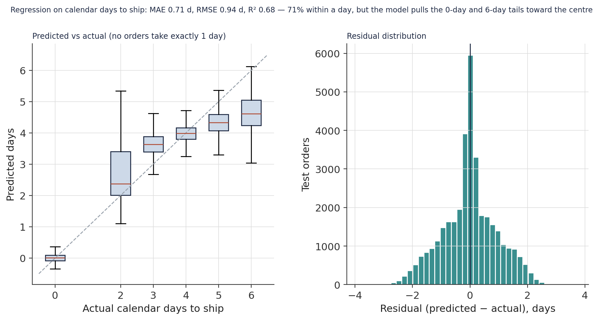
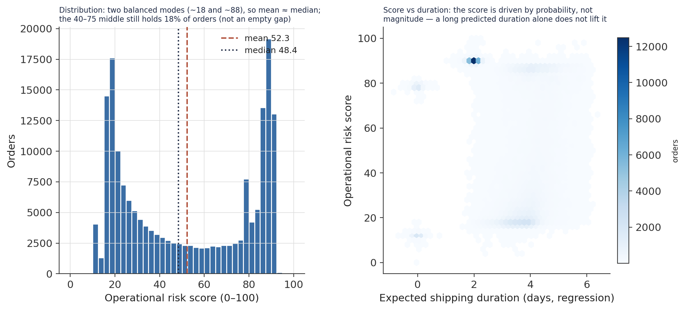
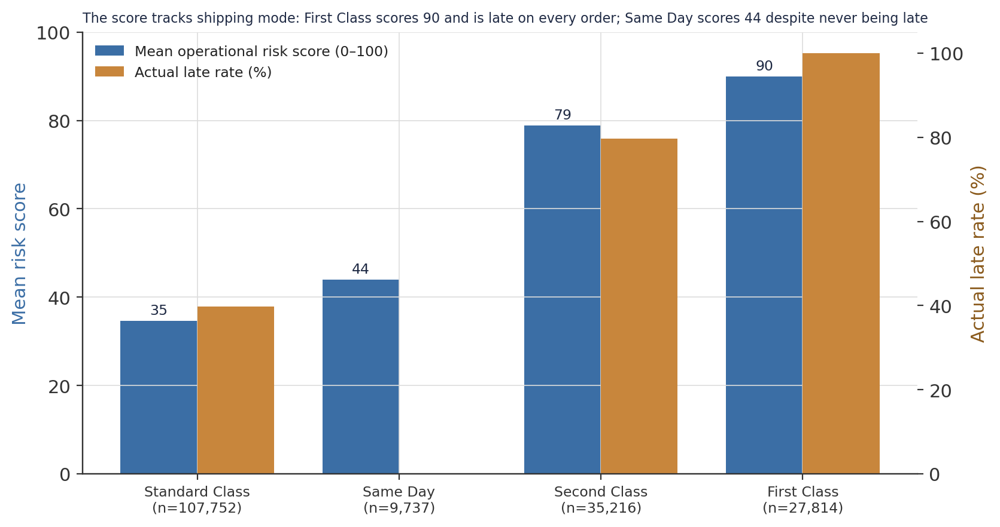
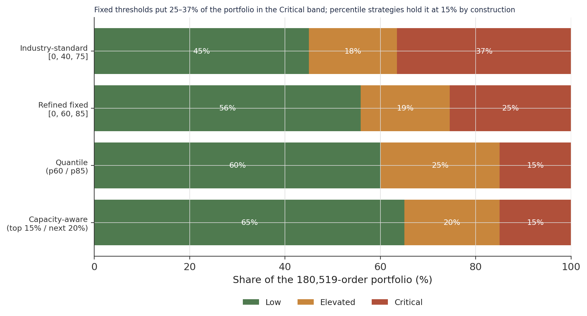

A Dual-Engine Delay-Risk Model for 180,519 Shipments, and a Triage Layer Sized to Team Capacity
An XGBoost classifier and regressor scored against a leakage-controlled feature set, blended into a 0–100 operational risk index — with an honest ROC-AUC of 0.87, and a segmentation that caps the Critical alert queue at a fixed share of the portfolio instead of an arbitrary score cut-off.
A supervised modelling pipeline over a three-year, 180,519-order logistics dataset. Two engines: an XGBoost classifier for will this order be late? and an XGBoost regressor for how long will it take?, trained on the same 22-feature, leakage-audited matrix. Honest performance: the classifier reaches ROC-AUC 0.872 on a 36,104-order held-out set (accuracy 0.79, precision 0.85, recall 0.75 at the default threshold); the regressor reaches MAE 0.71 days, R² 0.68 on calendar days to ship. One number: the two outputs blend with historical destination, mode, and category late-rates into a 0–100 operational risk score. The triage contribution: fixed score thresholds place 25–37% of the portfolio in the Critical band; percentile and capacity-aware strategies hold it at a chosen 15% — the alert queue is sized to the control tower, not to the score’s shape. Reproduced entirely from persisted model artefacts.
delay prediction, XGBoost, operational risk score, data leakage audit, multicollinearity, variance inflation factor, probability calibration, threshold analysis, precision recall trade-off, risk segmentation, capacity-aware triage, logistics analytics, Python, scikit-learn
Abstract
This study builds a supervised model that assigns every order in a three-year, 180,519-record e-commerce logistics dataset a bounded operational risk score, so a control tower can intervene before a shipment is late rather than after. The architecture is two engines on a shared feature set: an XGBoost classifier for the probability of a late delivery and an XGBoost regressor for the number of calendar days a shipment will take. The feature matrix was reduced from 59 joined columns to 22 through a leakage audit (ten post-shipment fields removed), an identifier sweep, and a variance-inflation scan that dropped five collinear columns — including the scheduled-shipping-window field, a near-linear shadow of the actual duration. On a stratified 36,104-order held-out set the classifier reaches ROC-AUC 0.872 (accuracy 0.791, precision 0.848, recall 0.753 at the 0.50 threshold) and the regressor reaches MAE 0.71 days, RMSE 0.94 days, R² 0.681 — real decision-support performance, and well below the inflated figures a leaked feature set would produce. Four independent attribution methods across both engines converge on the same dominant driver: shipping mode carries 0.72 of the classifier’s gain importance and 0.59 of the regressor’s, an order of magnitude above any other feature. The two model outputs are blended with historical destination, shipping-mode, and category late-rates (weights 0.60 / 0.20 / 0.10 / 0.10) and min-max scaled to a 0–100 index. The study’s operational contribution is the triage layer: fixed score thresholds place 25–37% of the portfolio in the Critical band, which no control tower can action; percentile and capacity-aware strategies hold the Critical share at a chosen 15%, sizing the alert queue to the team rather than to the score distribution’s shape. Every result is reproduced from persisted model artefacts.
Keywords: delay prediction, XGBoost, operational risk score, data-leakage audit, probability calibration, threshold analysis, capacity-aware triage
Introduction
A logistics control tower needs to answer two questions about every order the moment it is placed: will it be late, and how long will it take. A binary flag without a duration cannot prioritise a five-day delay over a one-day delay; a duration without a probability cannot tell an operator whether a prediction is worth acting on. This study builds both answers as separate supervised models over the same feature set, then fuses them into a single 0–100 index a control tower can rank orders by.
Two design commitments shape the work. The first is leakage discipline: in a logistics dataset it is trivially easy to “predict” lateness from fields that are only populated after a shipment moves — actual transit days, delivery-performance labels, the dataset’s own post-hoc risk flag. A model trained on those fields scores near-perfectly and is worthless in production. The pipeline removes every post-shipment field and every row identifier before training, and the resulting performance figures are lower and honest. The second is operational realism in the triage layer: converting a continuous score into Low / Elevated / Critical bands with fixed cut-offs produces a Critical band whose size is an accident of the score distribution. A control tower has a fixed number of analysts; the segmentation should target a fixed share of orders, and this study compares five ways of doing that.
Method
Data and feature engineering
One fact table at order-item grain, fact_logistics_gold (180,519 rows), joined to a date dimension on a surrogate key to add fiscal-period, weekday, business-day, and season fields. The upstream Gold layer had already engineered the two modelling targets from fulfilment timestamps — is_late_actual (binary; 54.7% of order-items are late) and calendar_days_to_ship (integer, 0–6 days) — along with a high-value-order flag (net sales ≥ 2× median), a profit-margin ratio, and order-hour fields. The joined frame carried 59 columns.
Leakage audit and dimensional pruning
The feature matrix was cut from 59 columns to 22 in four passes (Table 1). Ten post-shipment leakage fields were removed (shipping_delay_days, shipping_date_key, shipping_hour, shipping_time, delivery_performance_type, late_delivery_risk, system_prediction_gap, order_profit_per_order, order_item_profit_ratio, and the regression target for the classifier). Six redundant fields (duplicate date keys, the raw product name superseded by a canonical form, a price-tier alias). Eleven low-signal fields confirmed near-zero on a mutual-information scan against the target (order_time, several post-fulfilment monetary fields, is_peak_logistics, is_month_end/is_month_start, and category dimensions already absorbed by stronger features). Four row identifiers (order_id, order_item_id, customer_id, department_id) — these scored highest on mutual information precisely because a tree can memorise them, which is the failure mode the scan exists to catch. Finally a variance-inflation scan flagged five columns above VIF 10: month and quarter (collinear with week_of_year), product_price (with net_sales_amount), store_country (with store_latitude), and shipping_days_scheduled — a near-linear shadow of actual transit that, when retained in an earlier iteration, ranked among the top three drivers and masked the true importance of shipping mode.
Table 1
Feature-Matrix Reduction (59 joined columns → 22 modelling features)
| Removal pass | Count | Rationale |
|---|---|---|
| Post-shipment leakage | 10 | Fields populated only after a shipment moves; would encode the answer |
| Redundant | 6 | Duplicate keys, superseded names, tier aliases |
| Low mutual information | 11 | Near-zero signal against the target on an MI scan |
| Row identifiers | 4 | Unique per row; enable memorisation (highest MI, for that reason) |
| Multicollinearity (VIF > 10) | 5 | Near-linear shadow of a feature already in the matrix |
| Retained | 22 | Shipping mode, geography (store + destination), order hour, calendar, order quantity, high-value flag |
Note. Passes overlap slightly on a few columns; the net matrix is 22 features. The five VIF drops include shipping_days_scheduled, whose removal is revisited in the Discussion.
Encoding, splits, and the two engines
Five high-cardinality fields (destination_city, destination_country, destination_state, store_city, product_name_canonical) were target-encoded to a single numeric column each; the remaining categoricals were ordinal-encoded. The classification data was split 80/20 stratified on the target — 144,415 training rows, 36,104 test — preserving the 54.7% late rate in both. The regression used the same feature set against calendar_days_to_ship.
Both engines are XGBoost. The classifier’s hyperparameters were selected by a 50-iteration randomised search over a 3-fold cross-validation, optimising ROC-AUC across eight parameters (capacity, learning rate, subsampling, and explicit regularisation); the search ran 4.8 minutes and the fitted search object was persisted so every downstream prediction reloads rather than re-fits. The cross-validated search score was 0.968; the held-out test-set ROC-AUC is 0.872 (Results), and the test-set figure is the one reported throughout — the gap is the usual optimism of a cross-validated tuning score relative to a true hold-out.
The composite risk score
For every order in the full 180,519-record portfolio the classifier’s p_delay and the regressor’s expected_delay_days were generated by reloading the persisted models. Three historical baselines were computed as empirical late-rates by destination country, by shipping mode, and by product category. The operational risk score blends them:
raw = 0.60 · p_delay + 0.20 · destination late-rate + 0.10 · shipping-mode late-rate + 0.10 · category late-rate
min-max scaled to 0–100. The regressor’s duration estimate is exported alongside the score as an independent magnitude signal, not folded into the blend — so a consumer reads probability, expected duration, and the unified index side by side.
Segmentation strategies
Five ways of cutting the continuous score into Low / Elevated / Critical bands were evaluated: two fixed-threshold schemes ([0, 40, 75] and [0, 60, 85]), a quantile scheme (the score’s own 60th and 85th percentiles), a rolling-percentile scheme (60th/85th percentiles on a trailing 3,000-order window, for drift resistance), and a capacity-aware scheme that sets the Critical and Elevated shares first (top 15%, next 20%) and solves for the cut-offs.
Software
Python 3.10 with xgboost, scikit-learn (RandomizedSearchCV, metrics, calibration_curve), category_encoders (TargetEncoder), statsmodels (VIF), shap, pandas, numpy, and matplotlib. random_state = 42 throughout.
Results
Classification: ROC-AUC 0.872 on the held-out set
On the 36,104-order test set the tuned classifier reaches ROC-AUC 0.872 and average precision 0.880 (Figure 1). At the default 0.50 threshold it scores accuracy 0.791, precision 0.848, recall 0.753, F1 0.798 (Table 2); the confusion matrix is 14,864 true positives, 4,885 false negatives, 2,660 false positives, 13,695 true negatives (Figure 2). The probabilities are imperfectly calibrated: the model runs under-confident through the low-to-mid range (orders it scores at 0.08 are late 22% of the time; orders it scores at 0.35 are late 52% of the time) and there is a pocket of over-confidence at the very top — a decile the model scores at ≈1.0 is late only 76% of the time, an artefact traced to Same-Day shipments in the Discussion. This is a genuine decision-support model, not the near-perfect classifier a leaked feature set produces.
Figure 1
Classifier Discrimination on the Held-Out Test Set

Note. n = 36,104. AUC = area under the ROC curve; AP = average precision.
Figure 2
Confusion Matrix and Reliability Curve (Threshold 0.50)

Note. Reliability curve uses ten quantile bins.
One driver dominates both engines
Gain-based feature importance puts shipping mode far ahead of everything else in both models — 0.72 of the classifier’s total gain, 0.59 of the regressor’s (Figure 4). Every other feature contributes between 0.01 and 0.04: order hour and a cluster of store- and destination-geography columns for the classifier; destination geography, season, and week-of-year for the regressor. The notebook’s SHAP analysis (not reproduced here) reports the same ranking from a second attribution method on both engines, so four independent views — classification gain, classification SHAP, regression gain, regression SHAP — agree on the same top features. That convergence is the evidence that the models learned real logistics structure: which carrier moves the order, where it is going, where it ships from, and when in the day it was placed.
Figure 4
Gain Importance — Classifier and Regressor

Note. Gain importance, normalised to sum to 1 within each engine.
Regression: within a day, but conservative on the tails
The duration regressor reaches MAE 0.71 days, RMSE 0.94 days, R² 0.681 on the held-out set (Figure 5). The near-equal MAE and RMSE indicate a well-behaved error distribution with no catastrophic misses; 71% of test orders are predicted within one day of the actual duration and the residuals are centred on zero. The model does compress the tails — orders that actually take 6 days are predicted at ≈4.6 on average, and orders that take 0 days are predicted at ≈0 but with a spread into negative values — which is expected for a bounded integer target with irreducible noise (weather, customs, last-mile congestion) that the pre-shipment features cannot see. Two-thirds of the variance explained from information available at order placement is a production-grade result for this problem.
Figure 5
Regression Fit on Calendar Days to Ship

Note. n = 36,104. No order in the data ships in exactly 1 calendar day, hence the gap.
The composite score: bimodal but balanced
Blending the two engines with the historical baselines and scaling to 0–100 produces a score with mean 52.3 and median 48.4 across the full portfolio (Figure 6). The distribution has two modes — near 18 and near 88 — inherited from the classifier’s probability output, which itself is concentrated at the extremes (28% of orders below P = 0.1, 34% above P = 0.9). But the two modes are close to balanced, so mean and median nearly coincide, and 18% of orders fall in the 40–75 middle band — thinner than the modes, but not the empty gap a raw probability cut produces. The score-versus-duration panel confirms the design: the score is stratified by probability, not by predicted duration — a long expected shipping time on its own does not lift an order’s score.
Figure 6
Operational Risk Score — Distribution and Relationship to Predicted Duration

Note. Score = min-max scaled blend of p_delay (0.60) and historical destination / mode / category late-rates (0.20 / 0.10 / 0.10).
The score tracks shipping mode
Aggregating the score by shipping mode makes its logic legible (Figure 7). First Class averages a score of 90 and is late on 100% of its 27,814 orders — consistent with the companion OTIF diagnostic, which found First Class is promised a one-day window it never meets. Second Class averages 79 (actual late rate 80%). Standard Class averages 35 (actual 40%). Same Day averages 44 despite being late on 0% of its orders — the score over-rates it, for the reason given next.
Figure 7
Mean Risk Score vs Actual Late Rate, by Shipping Mode

Note. Actual late rate from is_late_actual in the Gold layer.
Triage: sizing the Critical queue to the team
Cutting the score into three bands with fixed thresholds produces a Critical share that is an artefact of the distribution (Figure 8, Table 3). The industry-standard [0, 40, 75] cut sends 37% of the portfolio to Critical; the refined [0, 60, 85] cut — the one persisted on the scored table — sends 25%. Both are far more than a fulfilment-supervisor team sized for this portfolio can action; escalating a quarter of all orders makes every escalation worthless within days. The percentile strategies solve this structurally: the quantile cut holds Critical at exactly 15% by construction, and the capacity-aware cut lets the team set that share directly (10% for a smaller team, 20% for a larger one). The rolling-percentile variant does the same on a trailing window, so the Critical share stays at 15% of current conditions through a holiday surge or a carrier disruption rather than spiking. On this dataset the rolling and global quantile cuts land within 0.1 point of each other, which is itself a finding — the score distribution is stationary across the 2015–2018 window, with no regime shift.
Figure 8
Critical / Elevated / Low Shares Under Four Segmentation Strategies

Note. Shares of the 180,519-order portfolio. The rolling-percentile strategy (not shown) matches the quantile strategy to within 0.1 point.
Table 3
Risk-Bucket Profile Under the Persisted [0, 60, 85] Segmentation
| Band | Orders | Share | Mean P(late) | Mean expected duration | High-value share | Mean shipping-mode late-rate |
|---|---|---|---|---|---|---|
| Low | 100,795 | 55.8% | 17.3% | 3.66 d | 12.6% | 0.39 |
| Elevated | 33,755 | 18.7% | 86.1% | 3.72 d | 12.2% | 0.50 |
| Critical | 45,969 | 25.5% | 99.5% | 2.88 d | 12.6% | 0.92 |
Note. The Critical band’s mean expected duration (2.88 d) is lower than the Elevated band’s (3.72 d): an order reaches Critical on near-certain probability, not on a long predicted duration — the index measures risk, not magnitude. High-value orders are evenly spread across the three bands.
Discussion
Principal findings
The pipeline delivers a working dual-engine risk model: a delay classifier at ROC-AUC 0.872 and a duration regressor at R² 0.681, both from information available at order placement, blended into a single 0–100 index. Its most transferable contribution is not the model but the triage layer — the demonstration that fixed score thresholds cannot control alert volume (they hand a control tower 25–37% of the portfolio as Critical), and that percentile or capacity-aware cuts fix this by targeting a share instead of a score value. The substantive operational finding is that one lever dominates: shipping mode accounts for the majority of both engines’ predictive power, and the score by mode (First Class 90 / Second 79 / Standard 35 / Same Day 44) says the single most effective intervention is mode selection at order entry.
The honesty trade-off, and what it cost
The headline number is 0.87, not the 0.97–0.99 an unaudited pipeline reports on this data. The gap is the leakage audit and the identifier removal doing their job: a model that “knows” the actual transit days, or that can memorise order_id, ranks late deliveries almost perfectly and predicts nothing useful about a new order. Dropping shipping_days_scheduled for multicollinearity had a specific, visible cost, though. That field encodes the promised window, which is deterministic for two modes — Same Day is scheduled at zero days, First Class at one — so removing it left the classifier unable to identify those cases cleanly. The consequence shows up directly: the classifier assigns Same-Day orders a mean P(late) of 0.48 and the composite score rates them at 44, even though not one Same-Day order in the data is late. This is the over-confident pocket in the reliability curve. A production build should either keep a leakage-safe encoding of the promised window or apply a deterministic override for the two fixed-schedule modes.
The score is a probability band
The Critical band carries a lower mean expected duration than the Elevated band (2.88 vs 3.72 days). This is not a defect — probability carries 60% of the blend, so an order reaches Critical by being near-certain to be late, not by being predicted to take a long time. Whether that is the right weighting is a business question: a control tower optimising for SLA breaches wants probability to dominate; one optimising for customer-experience severity would raise the duration weight. The regression estimate is exported unblended precisely so that choice stays open downstream.
Limitations
Calibration. The probabilities are usable for ranking but not as literal likelihoods without a calibration layer (isotonic or Platt); they run under-confident below 0.8 and over-confident at the very top. Reproducibility of the score. The persisted scored table’s risk_bucket column is the fixed [0, 60, 85] cut, not the rolling-percentile scheme the project metadata names as canonical, and the metadata’s stated bucket distributions predate the final score version — the numbers here are recomputed from the persisted score itself. Tail compression. The regressor pulls 0-day and 6-day shipments toward the centre, so it under-warns on the longest delays. Naming. The exported expected_delay_days field is predicted calendar days to ship (total duration), not days of delay. Scope. Every figure is the 2015–2018 DataCo window; the stationarity that makes the rolling and global cuts agree is a property of this dataset, not a guarantee for a live network.
Conclusion
A leakage-controlled XGBoost classifier and regressor, blended with historical late-rate baselines into a 0–100 operational risk score, give a logistics control tower an honest per-order risk read (ROC-AUC 0.87, duration MAE 0.71 days) rather than an inflated one. The score’s value is realised only through a triage layer that sizes the Critical alert queue to the team’s capacity — a fixed 15% share under percentile or capacity-aware segmentation — instead of to an arbitrary threshold that would flag a quarter of the portfolio. The persisted model bundle and the 180,519-row scored table support that deployment directly.
References
Constante, F., Silva, F., & Pereira, A. (2019). DataCo smart supply chain for big data analysis (Version 5) [Data set]. Mendeley Data. https://doi.org/10.17632/8gx2fvg2k6.5
Chen, T., & Guestrin, C. (2016). XGBoost: A scalable tree boosting system. Proceedings of the 22nd ACM SIGKDD International Conference on Knowledge Discovery and Data Mining, 785–794. https://doi.org/10.1145/2939672.2939785
Lundberg, S. M., & Lee, S.-I. (2017). A unified approach to interpreting model predictions. Advances in Neural Information Processing Systems, 30, 4765–4774.
Niculescu-Mizil, A., & Caruana, R. (2005). Predicting good probabilities with supervised learning. Proceedings of the 22nd International Conference on Machine Learning, 625–632. https://doi.org/10.1145/1102351.1102430
Pedregosa, F., Varoquaux, G., Gramfort, A., Michel, V., Thirion, B., Grisel, O., Blondel, M., Prettenhofer, P., Weiss, R., Dubourg, V., Vanderplas, J., Passos, A., Cournapeau, D., Brucher, M., Perrot, M., & Duchesnay, É. (2011). Scikit-learn: Machine learning in Python. Journal of Machine Learning Research, 12, 2825–2830.
Saito, T., & Rehmsmeier, M. (2015). The precision-recall plot is more informative than the ROC plot when evaluating binary classifiers on imbalanced datasets. PLOS ONE, 10(3), e0118432. https://doi.org/10.1371/journal.pone.0118432
Analysis and figures by the author. A supervised model on one 2015–2018 logistics dataset; the reported ROC-AUC of 0.87 is the leakage-controlled figure, and the probabilities need a calibration layer before literal interpretation.